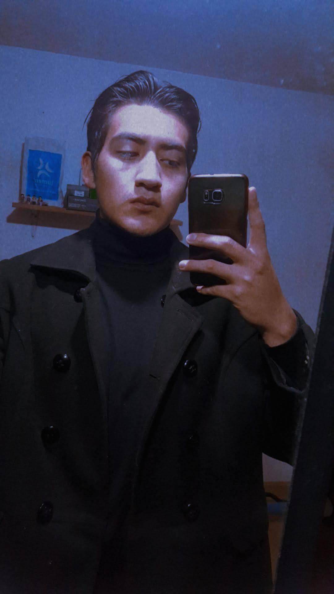

 Nacido en México. He formado parte del Instituto Politécnico Nacional (IPN) desde mis estudios de educación media superior. Mi principal plan era hacer una carrera técnica en sistemas digitales, para estudiar posteriormente programación a nivel licenciatura, sin embargo, al tener mi recorrido por los talleres en el CECyT, el profesor a cargo del taller de sistemas digitales hizo bastante tediosa y nada atractiva la plática, caso contrario de lo que hizo el encargado del taller de construcción. No niego que le tomé mucho amor a la construcción, pero no era mi objetivo principal; tampoco me arrepiento porque viví y experimenté muchas cosas nuevas, pero pienso que nunca hay que depender de lo que hagan las demás personas, si algo de interesa, hazlo por ti mismo. 👍